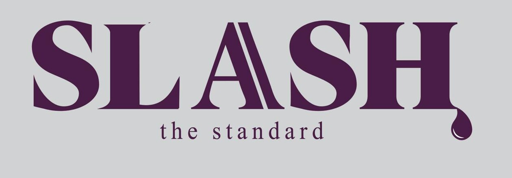
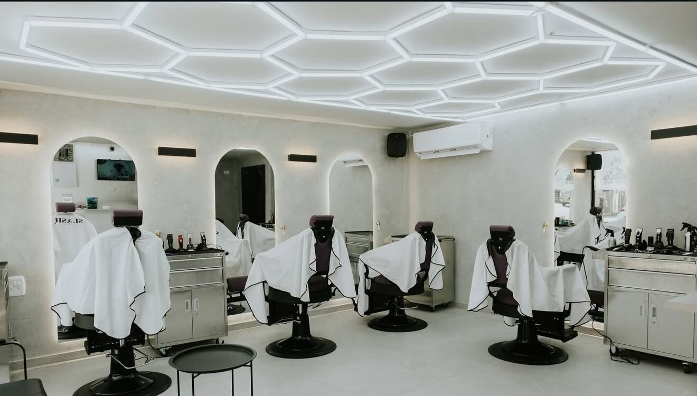

תספורת גבריםMen’s cuts
תמונה להמחשהIllustrative photo
קונספט לדוגמה שנבנה עבור Slash - Barbershop Academy · זה אינו האתר הרשמי של העסקA sample concept built for Slash - Barbershop Academy · This is not the business’s official website

Slash – Barbershop Academy, מספרה ואקדמיה בקרן היסוד 38, קריית ביאליק. תספורות לגברים ולילדים.Slash – Barbershop Academy, a barbershop and barber academy at Keren HaYesod 38, Kiryat Bialik. Cuts for men and kids.

החדר בקרן היסוד, ומה שקורה מול המראות.The room on Keren HaYesod, and what happens at the mirrors.
המספרה · קרן היסוד 38
פייד · תמונה להמחשה
תער · תמונה להמחשה
ראש תרגול · תמונה להמחשה
מול המראה · תמונה להמחשה
תמונה להמחשהIllustrative photo
„הגעתי עם הבן שלי וסיפרו אותו בים של סבלנות ומקצועיות”“I came with my son and they cut his hair with a sea of patience and professionalism”
Hen Ben Lulu · translated from Hebrew
5.0
320 ביקורות בגוגל320 Google reviews
וידאו להמחשהIllustrative video
…
„אווירה טובה ומשפחתית. יודע לארח את הלקוחות ומוזיקה טובה.”“A good, family atmosphere. Knows how to host customers, and good music.”
daniel landau · translated from Hebrew
Slash היא גם אקדמיה לספרות. רוצים ללמוד את המקצוע? שאלו אותנו.Slash is also a barber academy. Want to learn the trade? Ask us.
פרטים על האקדמיהAsk about the academyחמש מהן, כמו שנכתבו בגוגל.Five of them, as written on Google.
לכל הביקורות בגוגלAll reviews on Googledaniel landau · translated from Hebrew„מספרה מטורפת , אווירה טובה ומשפחתית. יודע לארח את הלקוחות ומוזיקה טובה. ספרים ברמה הכי גבוהה שיש באיזור יודעים להסביר ללקוח מה הם מתכננים ולמה.”“An insane barbershop, a good family atmosphere. Knows how to host customers, and good music. Barbers at the highest level in the area; they know how to explain to the customer what they’re planning and why.”
Hen Ben Lulu · translated from Hebrew„אלופים נחמדים וסופר מקצועיים השרות היה מצויין מהטובים שחוויתי עם צוות אדיב מאוד וסבלנות שיא. הגעתי עם הבן שלי וסיפרו אותו בים של סבלנות ומקצועיות. אסף עזריאל מספר אחד”“Champions, kind and super professional. The service was excellent, one of the best I’ve had, with a very courteous team and endless patience. I came with my son and they cut his hair with a sea of patience and professionalism. Assaf Azriel is number one.”
שליו בניאיש · translated from Hebrew„מספרה אש באווירה טובה וצעירה, אוהב ומעריך את כולם שם מקצוענים אחד אחד”“A fire barbershop with a good, young vibe. I love and appreciate everyone there, professionals one and all.”
liam_tzitlishvili liam · translated from Hebrew„ליאם ביטון הספר הכי מטורף שסיפר אותי יש לו ידי זהב”“Liam Biton is the most amazing barber who’s ever cut my hair. He has golden hands.”
עמנואל · translated from Hebrew„ליאם ביטון הספר הכי אלוף בעולם תמיד עובד טוב ללא איחורים”“Liam Biton is the champion barber of the world. Always does good work, never late.”
בוחרים, וההודעה נכתבת לבד. שולחים בוואטסאפ.Pick, and the message writes itself. Send it on WhatsApp.
אל: Slash · 054-794-8988To: Slash · 054-794-8988
שליחה בוואטסאפSend on WhatsApp…
כן, תספורות לגברים ולילדים.Yes, cuts for men and kids.
בימי שני ובשבת. בשישי עד 14:00.Mondays and Saturdays. Fridays until 14:00.
כותבים בוואטסאפ או מתקשרים ל־054-794-8988.Message on WhatsApp or call 054-794-8988.